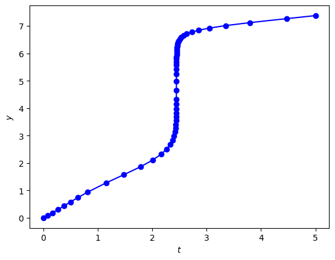
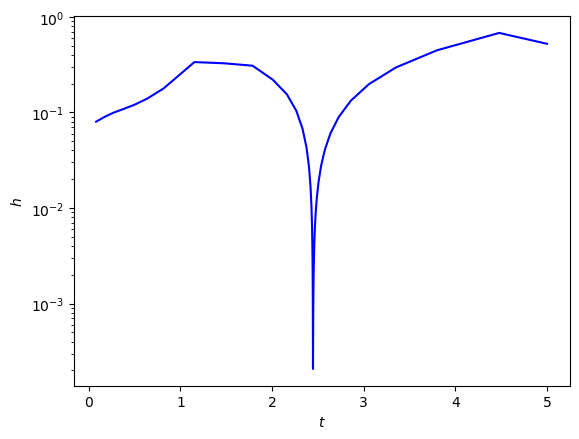

2.7. Adaptive step size control#
The implementations of the Runge-Kutta methods that we have used previously in this chapter have used a constant value of the step length \(h\). Using a fixed step length does not allow the method to take advantage of increasing the step length where the behaviour of the solution allows. Adaptive step size control is a method that attempts to control the value of the step length based on accuracy requirements. The accuracy of the approximation to the solution to the ODE is dependent upon three factors
the order of accuracy of the computational method;
the size of the step length used to advance the solution;
the behaviour of the solution.
Improving the order of accuracy of the method is often not straightforward and can place restrictions on the applicability of the method. Reducing the step length used will improve the accuracy of the approximation but since more steps are required to advance through the domain, this will increase the computational cost. The behaviour of the solution will have an effect on the accuracy of the approximation because computational methods are more accurate where the solution is slowly varying and less accurate where there are rapid variations in the solution.
For each step of the algorithm we compute two solutions of order \(p\) and \(p+1\) and use these to estimate the local truncation error. If the error estimate is within a desired accuracy tolerance, the step is considered to be successful and the algorithm proceeds onto the next step, and the step length is increased. If the error estimate is larger than the accuracy tolerance, the step is considered to have failed, and is repeated using a smaller step length.
2.7.1. Embedded Runge-Kutta methods#
Embedded Runge-Kutta methods produces two approximations over one step using the same stage values. The Butcher tableau for an embedded Runge-Kutta method takes the form
where the \(b_i\) and \(b_i^*\) coefficients are used to compute
a solution of order \(p + 1\) denoted by \(\mathbf{y}^{(p + 1)}\)
a solution of order \(p\) denoted by \(\mathbf{y}^{(p)}.\)
Since both solutions use the same stage values \(\mathbf{k}_i\) the extra cost of computing the additional solution is very small. The difference between the two solutions provides an estimate of the local truncation error incurred over the current step
Examples of two embedded Runge-Kutta methods are the Bogacki-Shampine 3(2) method, which computes third- and second-order solutions, and Fehlberg’s 5(4) method which computes fifth- and fourth-order solutions.
Definition 2.3 (Bogacki-Shampine 3(2) Runge-Kutta method (RK23))
Bogacki and Shampine [1989]
Definition 2.4 (Fehlberg’s order 5(4) Runge-Kutta method (RKF45))
Fehlberg [1969]
2.7.2. Error scaling#
When solving a system of \(N\) ODEs, the error estimate \(\mathbf{e}\) contains \(N\) components. To determine whether a step should be accepted, we require a single scalar measure of the error denoted by \(\Delta\). A simple approach is to take the largest absolute component of the local truncation error estimates
However, this does not account for the relative size compared to the actual solution. For example, suppose the exact solution is
and the error estimate is
Using the maximum absolute value of \(\mathbf{e}\) gives \(\Delta = 10^{-3}\), but
an error of \(10^{-3}\) compared to the solution \(10^{6}\) is tiny (one billionth the size of the solution)
an error of \(10^{-3}\) compared to the solution \(10^{-6}\) is large (one thousand times greater than the solution)
To account for this, we scale the estimated error using two accuracy tolerances
an absolute tolerance denoted by \(atol\)
a relative tolerance denoted by \(rtol\)
and compute a scaling factor using
where \(y_i^{(n)}\) is the solution at the current step (element \(i\) of \(\mathbf{y}_n\)). The use of both \(y_i^{(n)}\) and \(y_i^{(p+1)}\) ensures that the scaling remains appropriate when the solution is rapidly changing or passes through zero. The scaled error is then
and we can then use the Root Mean Square (RMS) of the scaled errors to compute \(\Delta\)
The value of \(\Delta\) is used to determine whether the estimation of the local truncation error is within the accuracy tolerances specified by \(atol\) and \(rtol\)
if \(\Delta \leq 1\)
the step is successful, and we accept the solution \(\mathbf{y}_{n+1} = \mathbf{y}^{(p + 1)}\) and increase the step length \(h\)
else
the step has failed, we repeat the step with a new decreased step length \(h\)
2.7.3. Computing the new step length#
At each step in the method we will be adjusting the value of the step length \(h\). If a step has failed, the step length is reduced so that the estimated local error is decreased. If a step is successful this indicates the step length used could have been larger, so we want to increase it for the next step but not too much as to result in a failed step.
Let \(y^{(p)}\) and \(y^{(p+1)}\) denote the numerical solutions computed using the order \(p\) and \(p+1\) method respectively and \(y\) denote the exact solution then
Subtracting the second equation from the first gives
since the \(O(h^{p+1})\) term dominates the \(O(h^{p+2})\) term. The scaling factors \(s_i\) do not depend on \(h\), so the scaled error measure \(\Delta\) also satisfies
By the definition of big-O notation, the scaled error satisfies
for some constant \(C\). We want to compute a new step length \(h_{new}\) which results in a desired value of \(\Delta = 1\), i.e.,
Defining a ratio \(r\) between the new and current step lengths
and using equations (2.20) and (2.19) gives
To prevent excessively large or small changes in the step length, the ratio is limited using
Here, a safety factor of 0.8 is applied to reduce the likelihood of repeated step rejections, in addition to limiting \(r\) so that the step length cannot increase by more than a factor of 5 or decrease by less than a factor of 0.1. The new step length is computed using
The initial step length is chosen so that it is small enough that the local truncation error is likely to satisfy the specified accuracy tolerances. A simple initial estimate is
Algorithm 2.2 (Solving an IVP using a single step method with adaptive step size control)
Inputs A system of first-order ODEs of the form \(\mathbf{y}' = f(t,\mathbf{y})\), the domain \(t \in [t_0, t_{\max}]\), the initial values \(\mathbf{y}(t_0) = \mathbf{y}_0\), and desired accuracy tolerances \(atol\) and \(rtol\).
Outputs \((t_0, t_1, \ldots)\) and \((\mathbf{y}_0, \mathbf{y}_1, \ldots)\).
\(h \gets 0.8 \, rtol^{1/(p+1)}\)
\(n \gets 0\)
while \(t_n < t_{\max}\)
Compute the \(\mathbf{y}^{(p+1)}\) and \(\mathbf{y}^{(p)}\) solutions
\(e_i \gets | y_i^{(p+1)} - y_i^{(p)} ||\)
\(s_i \gets atol + rtol \max(|y_i^{(n)}|, |y_i^{(p+1)}|)\)
\(\Delta \gets \sqrt{ \dfrac{1}{N} \displaystyle\sum_{i=1}^N \left( \dfrac{e_i}{s_i} \right)^2}\)
If \(\Delta \leq 1\)
\(\mathbf{y}_{n+1} \gets \mathbf{y}^{(p+1)}\)
\(t_{n+1} \gets t_n + h\)
\(n \gets n + 1\)
\(r \gets \min ( 5, \max ( 0.1, 0.8 \Delta^{-1 / (p+1)} ) )\)
\(h \gets \min(rh, t_{\max} - t_n)\)
Return \((t_0, t_1, \ldots)\) and \((\mathbf{y}_0, \mathbf{y}_1, \ldots)\)
Notice that the step length is updated after both successful and failed steps. Following a failed step, the solution is discarded, and the step is recomputed using the smaller value of \(h\). Following a successful step, the solution is accepted, and the updated step length is used for the next step.
Example 2.8
Use Bogacki-Shampine method to solve the following IVP using accuracy tolerances of \(atol = 10^{-6}\) and \(rtol = 10^{-3}\)
Solution
Here \(f(t, y) = e^{t - y\sin(y)}\), \(t= 0\) and \(y_0 = 0\). Computing the initial step length gives
Computing the stage values for the first step
So the solution over the first step is
Computing the RMS of the scaled error estimate
Since \(\Delta = 0.178368 \leq 1\) the step has succeeded, and we accept \(y_1 = y^{(3)} = 0.083096\). We now compute the new value of \(h\)
The solution over the full domain \(t\in [0, 5]\) is shown in Fig. 2.7.

Fig. 2.7 Bogacki-Shampine 3(2) method solution to the initial value problem \(y' = -21y + e^{-t}\), \(t\in [0,1]\), \(y(0)=0\) with an initial step length \(h=0.1\) and an accuracy tolerance \(tol=10^{-4}\).#
A plot of the step lengths used across the domain is shown in Fig. 2.8. Note how the step lengths decrease where the solution is steeper and increase where it is more slowly varying.

Fig. 2.8 Bogacki-Shampine 3(2) method solution to the initial value problem \(y' = e^{t - y\sin(y)}\), \(t\in [0,1]\), \(y(0)=0\).#
2.7.4. Code#
The code below defines the function rkf23() which computes the solution to an initial value problem using the Bogacki-Shampine 3(2) embedded Runge-Kutta method. Since we do not know beforehand how many steps will be required, we assume the number steps will be large and use a while loop instead of a for loop for stepping through the solution.
def rk23(f, tspan, y0, atol=1e-6, rtol=1e-3):
# Determine the number of ODEs in the system
N = len(y0)
# Define solution arrays and assign initial values
max_steps = 100000
t = np.zeros(max_steps + 1)
y = np.zeros((max_steps + 1, N))
t[0] = tspan[0]
y[0,:] = y0
# Compute initial step length
h = 0.8 * rtol**(1 / 3)
# Loop through steps
n = 0
while t[n] < tspan[-1]:
# Compute the stage values
k1 = f(t[n], y[n,:])
k2 = f(t[n] + 1/2 * h, y[n,:] + 1/2 * h * k1)
k3 = f(t[n] + 3/4 * h, y[n,:] + 3/4 * h * k2)
k4 = f(t[n] + h, y[n,:] + h * (2/9 * k1 + 1/3 * k2 + 4/9 * k3))
# Compute the 2nd and 3rd order solutions for the next step
y3 = y[n,:] + h * (2/9 * k1 + 1/3 * k2 + 4/9 * k3)
y2 = y[n,:] + h * (7/24 * k1 + 1/4 * k2 + 1/3 * k3 + 1/8 * k4)
# Compute Delta
e = np.abs(y3 - y2)
s = atol + rtol * np.maximum(np.abs(y[n,:]), np.abs(y3))
Delta = np.sqrt(np.mean((e / s)**2))
# Check if current step was successful
if Delta <= 1:
y[n+1,:] = y3
t[n+1] = t[n] + h
n += 1
# Compute ratio of new step to old
r = min(5, max(0.1, 0.8 * Delta**(-1/5)))
# Update h
h = min(r * h, tspan[-1] - t[n])
return t[:n+1], y[:n+1,:]
function [t, y] = rk23(f, tspan, y0, atol, rtol)
% Determine the number of ODEs in the system
N = length(y0);
% Define solution arrays and assign initial values
max_steps = 100000;
t = zeros(max_steps, 1);
y = zeros(max_steps, N);
t(1) = tspan(1);
y(1,:) = y0;
% Compute initial step length
h = 0.8 * rtol^(1/3);
% Loop through steps
n = 1;
while t(n) < tspan(2)
% Compute stage values
k1 = f(t(n), y(n,:))';
k2 = f(t(n) + 1/2 * h, y(n,:) + 1/2 * h * k1)';
k3 = f(t(n) + 3/4 * h, y(n,:) + 3/4 * h * k2)';
k4 = f(t(n) + h, y(n,:) + h * (2/9 * k1 + 1/3 * k2 + 4/9 * k3))';
% Compute 2nd and 3rd order solution
y3 = y(n,:) + h * (2/9 * k1 + 1/3 * k2 + 4/9 * k3);
y2 = y(n,:) + h * (7/24 * k1 + 1/4 * k2 + 1/3 * k3 + 1/8 * k4)';
% Compute Delta
e = abs(y3 - y2);
s = atol + rtol * max(abs(y(n,:)), abs(y3));
Delta = sqrt(mean((e / s).^2));
% Check if current step was successful
if Delta <= 1
y(n+1,:) = y3;
t(n+1) = t(n) + h;
n = n + 1;
end
% Update h
r = min(5, max(0.1, 0.8 * Delta^(-1/3)));
h = min(r * h, tspan(2) - t(n));
end
t(n+1:end) = [];
y(n+1:end,:) = [];
end